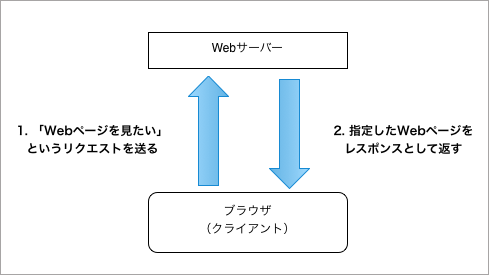

1日でわかるWebサービス制作実践講座
- マーケジン・アカデミー
- 2013年11月19日(火)
- by Yusuke Wada and Osamu Ise
...;
Web技術について
技術にまつわる注意
- 生半可は危険
- 言葉に踊らされない
- 技術を強要しない
「そこHTML5でつくって」
「？？（ HTML5と言われても... その定義は広いし... ）」
興味を持つことが大事
- エンジニアとしては嬉しい
- エンジニアは教えるのが好き
- 技術からの発想があるかも
- ちょっとした事が出来るかも
- 現にこの資料は...
改めてWeb技術の基礎
あたりまえに見ているWebページの裏側を知ろう
＊基本Markezineの連載を元にしてますがより噛みくだいて
サーバー・クライアントモデル
- サーバー
- よく聞きますよね？
- 例えば、Webページを配信する
- クライアント
- Internet Explorer, Chrome, Firefox...
- いわゆるブラウザもその一種
- サーバーに対してリクエストをしてレスポンスを受け取る
リクエストとレスポンス

リクエスト「このWebページを見たい！」
レスポンス「Webページはこれだよ！」
Webにおける約束事
- サーバー・クライアントモデルを成り立たせるために
- 両者間のやりとりについて約束事がある
- URL、HTTP、HTML
- 世界中どこでもWebページが見れるために...
URL = "Uniform Resource Locator"
http://example.com/about.html
- どこのWebページが見たいか？を示すアドレス
- http - HTTPというプロトコルを使うことを宣言
- example.com - サーバーのホスト名
- /about.html - ホスト配下の具体的な場所
HTTP = Hypertext Transfer Protocol
- サーバーとクライアント間の通信のやりとりを規定
- RFC 2616という仕様にまとめられている
- GET - URLで指定されたリソースを取り出す
- POST - URLに対してクライアントがサーバーへデータを送信する
まずは「そういう決まりごとがあるんだな」程度の理解から！
HTML = HyperText Markup Language
<html>
<head>
<title>Welcome Page</title>
</head>
<body>
Hello, I am <a href="http://yusuke.be/">yusukebe</a>!
</body>
</html>
- 皆さんご存知のコレです
- 他のページへのハイパーリンク
- 画像等の埋め込み
- プレーンテキスト形式にタグを書く
- 要素、属性、値、内容
- ブラウザはHTMLテキストを解釈し描画している
Webサイトの性質
「あなたのWebサイトは静的サイト？動的サイト？」
- 動的サイト
- リクエストごとに、サーバーサイドの裏側で動的にページが生成される
- 静的サイト
- HTMLや画像等を都度都度は変更せず、そのまま配信される
問題です
WordPress、MovableTypeで作られたサイト。
それぞれ動的？静的？どちら？
動的サイトと静的サイト
静的サイト
構成する要素
- HTML
- CSS
- JavaScript - ページに動的な動きを加える
- 画像、Flash、Webフォント...
CSS - HTMLを装飾する
CSSセレクタ
ヘッダー「h1」タグの「class」に属性「header」という値を記述
<h1 class="header">見出し</h1>
h1タグの内容の色を変更したい！とすると...
h1.header { color:red; }
どこを装飾するかを指示する「h1.header」がCSSセレクタと呼ばれている
どのように装飾するかはCSSプロパティで指定
JavaScript - HTMLを変化させる
クライアントサイドでの動的な仕掛けをつくれる
- Webページの特定の部分を動かす
- フェードイン・フェードアウトなどもできる
- ボタンを押すと一番上までスクロールして戻る
- クライアントサイドだけでフォームの入力値検証
- スライドショーなど特殊な見た目の実装
ここをクリックしてデモ
静的サイトとしてWebページ
- 最低限はHTML
- 見た目を変えたければCSS
- 動きを与えたければJavaScript
- サーバーで配信をすればWebページとして機能